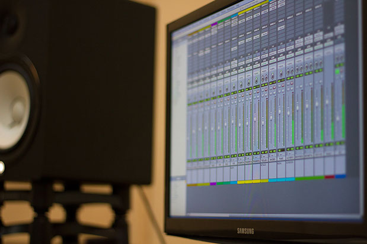

Con el objetivo de llegar al sonido que tu trabajo necesita, nuestra cabina está diseñada acústicamente, por lo que proporciona una experiencia de escucha óptima, libre de ondas estacionarias y reflexiones; lo que posibilita tomar las decisiones correctas a la hora de mezclar y/o masterizar tu material.
Añade la calidez del sonido analógico a tu música.
En Supra Aural, además de disponer de una gran cantidad de plugins, contamos con diferentes procesadores analógicos por los que pasan todos los trabajos llevados a cabo en el estudio, añadiendo ese toque que sólo el equipo analógico proporciona.